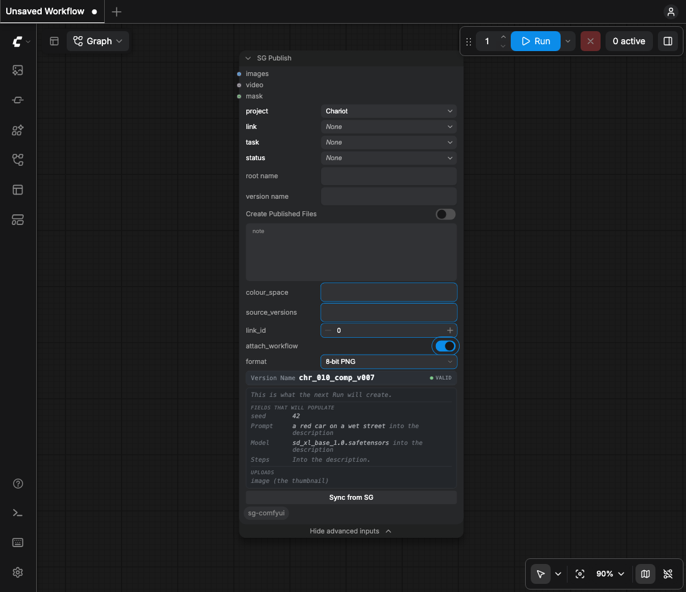

Provenance fields
Nine typed fields on Version, created under Settings, then SG, SG Site Setup. A publish does not need them.
| field | programmatic name | from |
|---|---|---|
| AI Generator | sg_ai_generator | ComfyUI, and the name the submitting client gave itself |
| AI Model | sg_ai_model | the checkpoints the graph loaded |
| AI Prompt | sg_ai_prompt | positive conditioning on this branch |
| AI Negative Prompt | sg_ai_negative_prompt | negative conditioning on this branch |
| AI Seed | sg_ai_seed | text, not a number: seeds reach 2**64-1 |
| AI Sampler | sg_ai_sampler | sampler and scheduler |
| AI Steps | sg_ai_steps | the last sampler on the branch |
| AI CFG | sg_ai_cfg | the last sampler on the branch |
| AI Generated From | sg_ai_generated_from | the Versions this was made from |
sg_ai_seed is text, not a number: seeds reach 2**64-1, which no numeric field on the
site has (probe 019).
Without the fields
- The facts go in the Version's description: the note, a blank line, then one line per fact, lineage included.
- Where some of the nine exist, those take their values. The description records the rest.
- The nodes say nothing about creating fields.

Attachments
- The record is attached as
.provenance.json. - The workflow is attached when the submitting client sent one.
- Provenance is scoped per branch. The node walks back through its own inputs.
Creating the fields from the command line
PYTHONPATH=src <comfy-python> -m comfyui_sg.fields- It reads the schema first and creates only what is missing. Pressing twice is safe.
- It imports no torch.
- It reads a script key from
.env.local, never from Settings. - That key needs permission to create fields on Version. Most artist accounts do not have it.
- Field names are permanent. Deleting a field frees the field, never its name. Trashed fields cannot be listed, so a name spent here is spent site-wide forever (probe 019).
Mapping to existing fields
Point the profile's provenance.map at them. Mapping onto a studio's own fields works
and is not a release feature.
The submitting client
A Version that reads ComfyUI (unknown client) means the client that POSTed /prompt did not name itself. The name is the client's own claim, in extra_data.comfy_usage_source. Set it in your own submitter:
POST /prompt {"prompt": {...}, "extra_data": {"comfy_usage_source": "my-farm-submitter"}}A Comfy-Usage-Source header works too. The server copies it into extra_data only when the body left the key out.